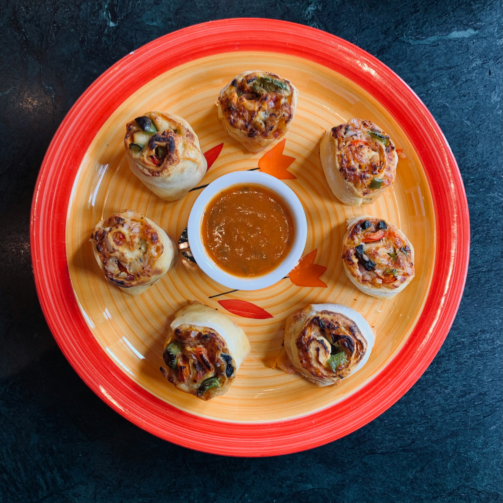

Home
Protein Pizza Rolls

Quick and easy high protein pizza rolls recipe by @fairfiteats on instagram.com (makes 10 rolls). Jump to Macros.
Ingredients
- 40oz Lean Ground Beef
- 1 Tbsp Garlic Salt
- 1 Tbsp Italian Seasoning
- 1 Tbsp Smoked Paprika
- 1 Tbsp Onion Powder
- 2 Servings Turkey Pepperioni
- 1 Cup Tomato Sauce
- 3oz Light Cream Cheese
- 1/2 Cup Parsley
- 5 Cups Low-Fat Mozzarella
- 10 Low-Calorie Low-Carb Tortillas (10inch)
Instructions
- Preheat oven to 400 degrees Farenheight
- On stovetop: cook lean ground beef over medium head in an oiled pan
- Stir in Itailan seasoning, smoked paprika, and onion powder
- Cut turkey pepperioni into halves and stir into mixture
- Add tomato sauce and cream cheese, stir until well incoorperated
- Stir in parsley
- Add spoonful of the mixture to tortilla
- Sprinkle each with mozzarella
- Roll
- Place rolls on a baking pan and spray with cooking oil
- Bake for 20 minutes
Additional Information
Approximate Macros Per Roll:
- Calories: 300
- Fat: 9g
- Carbs: 27g
- Protein: 50g
Wrap and freeze extra Pizza Rolls. To reheat:
- Unwrap foil
- Place damp paper towl around pizza roll
- Microwave for 3-4 minutes
- Toast in an oiled pan on stovetop to make crsipy